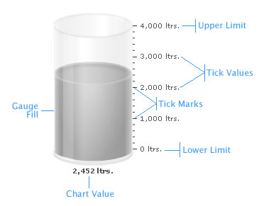

| Elements of the gauge |
A cylinder gauge chart consists of the following elements: Here we’ll see each of them in detail. Let’s first have a look at a standard cylinder chart enlisting the various basic components: |
|  |
The cylinder is the main component in a cylinder chart – the percentage of cylinder filled helps the end user to decipher the value being illustrated.
Tick marks are the calibration marks on the vertical scale to the left/right of the cylinder to help interpret the reading. There are two types of tick marks which can be drawn on the chart:
Now that we are aware of the basic components that make up a cylinder gauge, let's go ahead to build a sample cylinder gauge. |